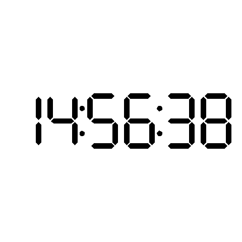

library(tidyverse)
library(sf)
library(inkscaper)
library(gganimate)
"digit, X1, X2, X3, X4, X5, X6, X7
0, 1, 1, 1, 0, 1, 1, 1
1, 0, 0, 1, 0, 0, 1, 0
2, 1, 0, 1, 1, 1, 0, 1
3, 1, 0, 1, 1, 0, 1, 1
4, 0, 1, 1, 1, 0, 1, 0
5, 1, 1, 0, 1, 0, 1, 1
6, 1, 1, 0, 1, 1, 1, 1
7, 1, 0, 1, 0, 0, 1, 0
8, 1, 1, 1, 1, 1, 1, 1
9, 1, 1, 1, 1, 0, 1, 1" %>% I() %>% read_csv() -> digits
tmp <- 'Digital_clock_display.svg' %>%
inx_extension(inkscape_extension_name = "dxf12_outlines.py", ext =".dxf") %>%
st_read() %>% st_union() %>% st_polygonize() %>%
first()
# segment
segments <- st_sfc() %>% st_sf()
for (i in c(1: 7)) {
segments <- segments %>% bind_rows((tmp %>% nth(i) %>% st_sfc() %>% st_sf() %>%
mutate(segment = paste0("X",i))))
}
# dots
dots <- st_sfc() %>% st_sf()
for (i in c(43: 46)) {
dots <- dots %>% bind_rows((tmp %>% nth(i) %>% st_sfc() %>% st_sf() %>%
mutate(segment = paste0("X",i)))) %>%
mutate(colour = "black")
}
# get time
collection <- st_sfc() %>% st_sf()
for (k in c(1:60)) {
Sys.sleep(1)
time <- Sys.time() %>% format("%H%M%S") %>% strsplit("") %>% unlist()
result <- st_sfc() %>% st_sf()
vec <- c(0, 15.8, 35, 50.8, 70, 85.8)
for (i in c(1:6)) {
result <- result %>% bind_rows(
digits %>% filter(digit == time[i]) %>% pivot_longer(!digit, names_to = 'segment') %>%
right_join(segments) %>% mutate(colour = if_else(value == 1, "black", "white")) %>%
mutate(geometry = geometry + c(vec[i], 0)) %>% st_as_sf()
)
}
df = dots %>% bind_rows(result) %>% mutate(facet = k)
collection <- collection %>% bind_rows(df)
plot <- df %>%
ggplot() +
geom_sf() +
aes(fill = colour) +
scale_fill_identity() +
theme_void()
print(plot)
}
anim <- collection %>% ggplot() +
geom_sf(aes(colour = colour, fill = colour)) +
scale_color_identity() +
scale_fill_identity() +
transition_time(facet) +
theme_void()
animate(anim, renderer = gifski_renderer("Digital_clock_display.gif"), fps = 1, duration = 60)
